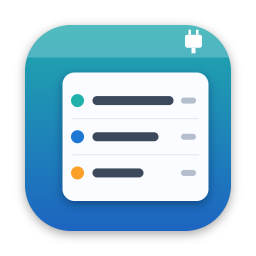

USBMenu
A live list of your Mac's USB devices, right in the menu bar.
What it does
- Lists every connected USB device and updates the moment you plug something in or remove it
- Shows each device's serial port, vendor, VID:PID, serial number and location. Click any value to copy it
- Names popular maker boards (Arduino, Teensy, Raspberry Pi RP2040, ESP32 and more) and common USB-serial chips
- Shows the network interface and IP address of USB network devices
Help
Where is the app? USBMenu has no Dock icon or window. Look for the connector icon with a number at the top right of your screen, in the menu bar. If your menu bar is crowded, the icon may be hidden behind the notch; quit a few other menu bar apps to make room.
My device doesn't show up. Make sure the cable carries data. Many USB cables only charge. Try another cable or port.
My board shows a chip name (like CH340) instead of the board's name. Many clone and ESP32 boards use a generic USB-serial chip, which reports the chip's ID instead of the board's. USBMenu shows the chip so you still know which port is which.
A USB network device has no IP. Its IP appears a few seconds after plug-in, once your Mac gets an address. The device's own IP appears after your Mac has exchanged some traffic with it. Pinging it once is enough.
How do I start it automatically? Choose Launch at Login in the USBMenu menu.
How do I bring back the welcome dialog? Choose Show Welcome… in the USBMenu menu.
Contact
Questions, bug reports or a board you'd like USBMenu to recognize? Email raul@silvadesign.com. For a board request, include its VID:PID from the device's submenu.